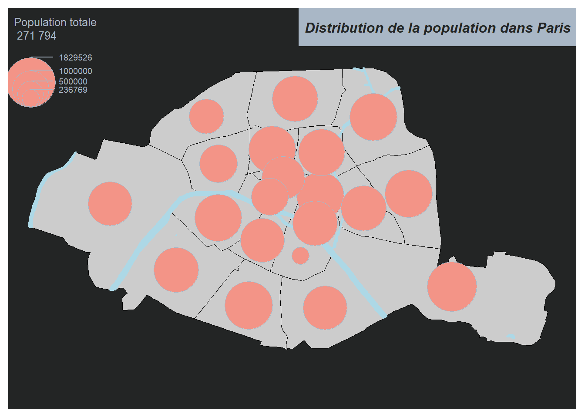
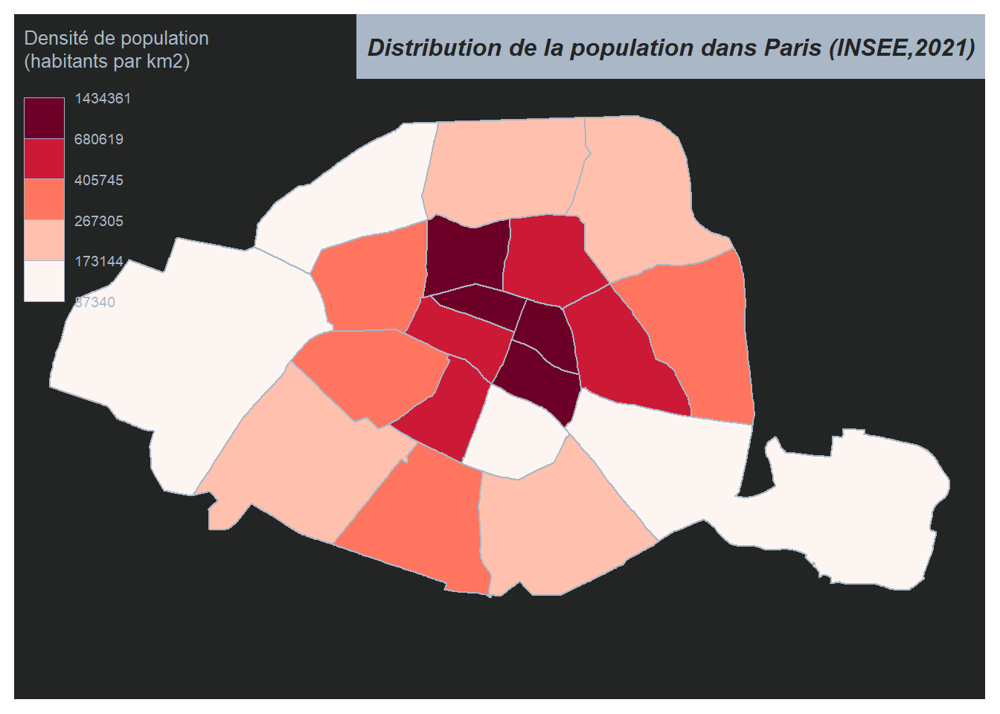
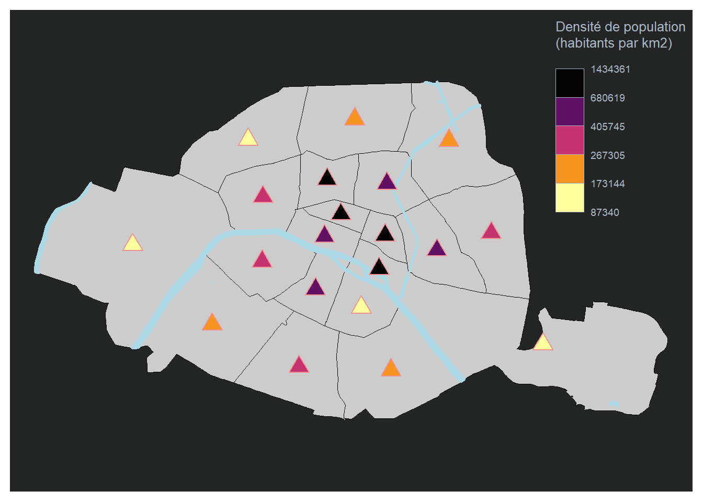
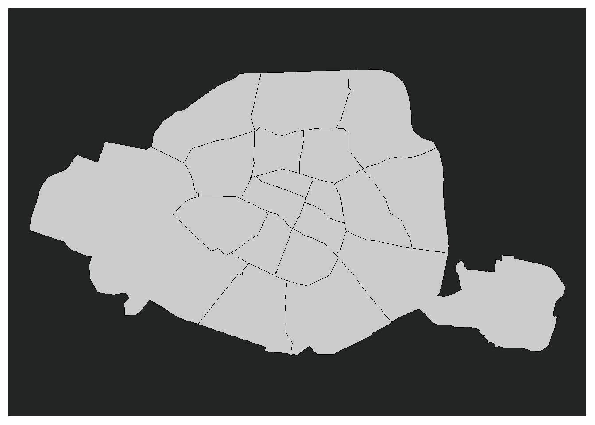

library(mapsf)Warning: le package 'mapsf' a été compilé avec la version R 4.2.3library(sf)Warning: le package 'sf' a été compilé avec la version R 4.2.3Linking to GEOS 3.9.3, GDAL 3.5.2, PROJ 8.2.1; sf_use_s2() is TRUENous allons réaliser des cartes avec R à l’aide du packages install.packages(“mapsf”).
library(mapsf)Warning: le package 'mapsf' a été compilé avec la version R 4.2.3library(sf)Warning: le package 'sf' a été compilé avec la version R 4.2.3Linking to GEOS 3.9.3, GDAL 3.5.2, PROJ 8.2.1; sf_use_s2() is TRUENous allons réaliser une carte des arrondissments de Paris. J’ai récupérer les données sur le site de Paris Data : https://opendata.paris.fr/pages/catalogue/?disjunctive.theme&disjunctive.publisher
Je réalise un fond de carte.
# ----- Import des données -----
arrondissements <- st_read(dsn = "https://opendata.paris.fr/explore/dataset/arrondissements/download/?format=geojson&timezone=Europe/Berlin&lang=fr")Reading layer `OGRGeoJSON' from data source
`https://opendata.paris.fr/explore/dataset/arrondissements/download/?format=geojson&timezone=Europe/Berlin&lang=fr'
using driver `GeoJSON'
Simple feature collection with 20 features and 9 fields
Geometry type: POLYGON
Dimension: XY
Bounding box: xmin: 2.224078 ymin: 48.81558 xmax: 2.469761 ymax: 48.90216
Geodetic CRS: WGS 84cours_deau<-st_read(dsn="https://opendata.paris.fr/api/explore/v2.1/catalog/datasets/plan-de-voirie-voies-deau/exports/geojson?lang=fr&timezone=Europe%2FBerlin")Reading layer `OGRGeoJSON' from data source
`https://opendata.paris.fr/api/explore/v2.1/catalog/datasets/plan-de-voirie-voies-deau/exports/geojson?lang=fr&timezone=Europe%2FBerlin'
using driver `GeoJSON'
Simple feature collection with 58 features and 25 fields
Geometry type: MULTIPOLYGON
Dimension: XY
Bounding box: xmin: 2.224081 ymin: 48.81924 xmax: 2.450555 ymax: 48.90207
Geodetic CRS: WGS 84#Dans un premier temps je réalise mon fond de carte avec les arrondissments de Paris
mf_map(x = arrondissements, border = "black")
#Je rajoute les cours d'eau sur mon fond de carte avec l'argument "add=TRUE"
mf_map(x=cours_deau,lwd=2,border="lightblue",col="lightblue",add=TRUE)
# d'un point de vue esthétique je choisis d'appliquer un fond noir à mes cartes
mf_theme("darkula")Les différents type de cartes

Les cartes à symboles proportionels
Les cartes à symboles proportionnels sont une méthode de représentation graphique utilisée pour visualiser les variables de stocks, ce qui correspond à des variables quantitatives absolues pour lesquelles la somme et la moyenne ont une signification.
arrondissements$pop <- c(1012687, 903036, 1369857, 1491027, 1672009, 1506475, 1637163, 1603380, 1637542, 1059282, 1494945, 1436205, 1705774, 1425805, 236769, 1668605, 1674568, 1539668, 1421827, 1829526) #INSEE,2021
mf_map(x = arrondissements, border = "black")
mf_map(x=cours_deau,lwd=2,border="lightblue",col="lightblue",add=TRUE)
mf_map(
x = arrondissements,
var = "pop",
type = "prop",
leg_title = "Population totale\12 271 794",
col="#F39487",
add= TRUE
)
mf_title("Distribution de la population dans Paris")
Les cartes choroplètes
Les cartes choroplèthes sont une méthode courante de représentation graphique utilisée pour visualiser les variables de ratios, qui correspondent à des variables quantitatives relatives pour lesquelles la moyenne a un sens, mais la somme n’a pas de sens.
#création de la variable densite
arrondissements$DENS <- 1e6 * arrondissements$pop / as.numeric(st_area(arrondissements))
mf_map(
x = arrondissements,
var = "DENS",
type = "choro",
breaks = "quantile",
pal = "Reds",
lwd = 1,
leg_title = "Densité de population\n(habitants par km2)",
leg_val_rnd = 0
)
mf_title("Distribution de la population dans Paris (INSEE,2021)")
On peut aussi représenter ces variables sous d’autres forme:
arr_c<-st_centroid(arrondissements)Warning: st_centroid assumes attributes are constant over geometriesmf_map(x = arrondissements, border = "black")
mf_map(x=cours_deau,lwd=2,border="lightblue",col="lightblue",add=TRUE)
mf_map(
x = arr_c,
var = "DENS",
type = "choro",
breaks = "quantile",
pal = "Inferno",
pch = 24,
cex = 2,
border = "#F29094",
lwd = 1,
leg_title = "Densité de population\n(habitants par km2)",
leg_val_rnd = 0,
add= TRUE
)
Et si on regroupait deux arrondissemtns ?
Le code ci-dessous montre la fusion du 15e et 16e arrondissement. L’idée globale du code c’est de fusionner les deux polygones (celui du 15e et du 16e). Ensuite, on recrée toute la ligne de notre tableau de donnée pour pouvoir la fusionner avec celui-ci.
# ---- Fusionner deux polygones ---- #
# Sélectionner les deux polygones que vous souhaitez fusionner
poly1 <- arrondissements[arrondissements$l_aroff == "Passy", ] # sélectionne le polygone avec le nom "Passy"
poly2 <- arrondissements[arrondissements$l_aroff == "Vaugirard", ] # sélectionne le polygone avec le nom "Vaugirard"
# Fusionner les polygones
new_poly <- st_union(poly1, poly2) # fusionne les deux polygones sélectionnés en un seul polygoneWarning: attribute variables are assumed to be spatially constant throughout
all geometries# Ajouter la surface, la population, le périmètre et les coordonnées géographiques des deux polygones
#l'idée c'est de recréer une nouvelle ligne pour notre nouveau polygone pour qu'on puisse le reinsérer dans notre tableau.
new_poly$surface <- new_poly$surface + new_poly$surface.1 # ajouter la surface des deux polygones
new_poly$n_sq_co <- new_poly$n_sq_co + new_poly$n_sq_co.1 # ajouter la population des deux polygones
new_poly$perimetre <- new_poly$perimetre + new_poly$perimetre.1 # ajouter le périmètre des deux polygones
new_poly$n_sq_ar <- new_poly$n_sq_ar + new_poly$n_sq_ar.1 # ajouter les coordonnées géographiques des deux polygones
# Modifier les informations de localisation
new_poly$l_aroff <- "un nouvel arrondissement" # changer le nom de l'arrondissement
new_poly$l_ar <- "xxème Ardt" # changer le numéro de l'arrondissement
new_poly$c_ar <- "xx" # changer le code de l'arrondissement
new_poly$c_arinsee <- "75xxxx" # changer le code INSEE de la commune
# Sélectionner certaines colonnes pour créer un nouvel objet de données
arrondissements_test <- subset(new_poly, select = c(c_ar, l_aroff, surface, l_ar, n_sq_co, c_arinsee, n_sq_ar, perimetre, geom_x_y))
# à noter qu'il est très important de mettre les éléments dans le même ordre que celui du tableau
# Remplacer les informations de l'arrondissement "Passy" dans l'objet "arrondissements" par les nouvelles informations
arrondissements[arrondissements$l_aroff == "Passy", ] <- arrondissements_test
# Afficher la carte de l'objet "arrondissements" avec les frontières en noir
mf_map(x = arrondissements, border = "black")
Pour la rédaction de cet article je me suis grandement inspirée du travail de Timothée Giraud.